A college finder app that simplifies the college search process.
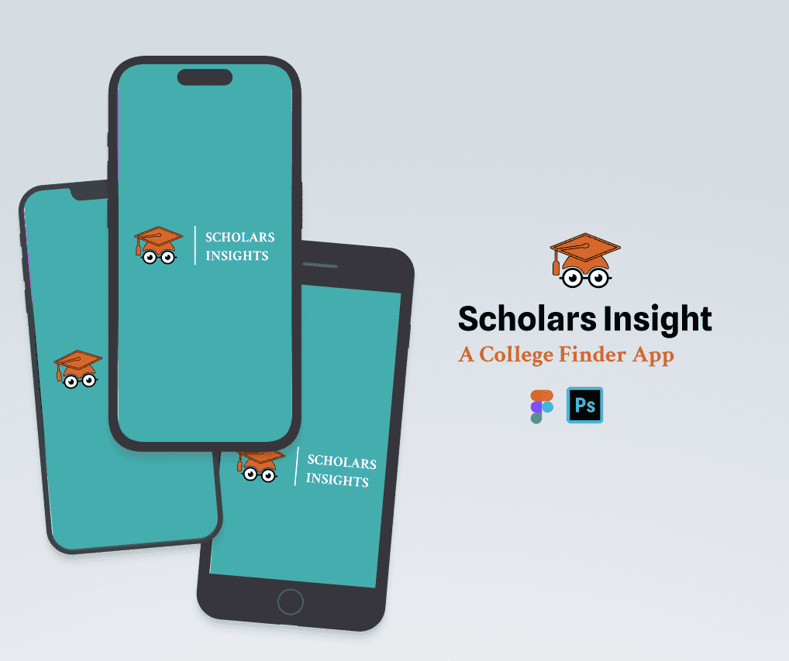
"Scholars Insights," is a user-centric platform designed to simplify the college search process. It empowers students to find the right college or university by providing a rich database of institutions worldwide. Users can easily explore colleges, access virtual campus tours, and connect with alumni for mentorship.
Scholars Insights ensures a seamless, informative, and engaging user experience, making it an crucial tool for prospective students navigating the path to higher education.
This UX case study delves into how we optimized the app's design to enhance user satisfaction and achieve our goals.
My goal was to make the process of looking for colleges much easier and more enjoyable for students. Through Scholar Insights, students can not only access information and updates about colleges but also experience virtual campus visits and connect with people who have attended those colleges before. This way, they can double-check their decisions with the advice of experienced individuals."
A Digital solution to make finding the right college and succeeding in your academic journey much easier. This platform will use artificial intelligence to suggest colleges that matches your interests. It'll also let you explore campuses online if you can't visit them in person. You can even talk to people who've been to these colleges to get advice. And, It will not be stopping there. It'll make sure you have someone to guide you throughout your academic journey, helping you reach your full potential in education.
My process included research, plamning, designing and testing. Each was performed with the below methods.
After writing the problem statement, imaging the possible solutions and planning the further process i follow, It was time to discover more things through various research methods.
In the initial phase of our case study, i did an extensive user research based on secondary data sources. The primary goal was to gain a deep understanding of the needs, preferences, and challenges faced by students in the college search process.
Research Objectives: I defined clear research objectives to guide our research efforts. These objectives focused on understanding user behavior, market trends, and the competitive landscape.
Data Collection: I gathered data from user interviews and reputable secondary sources, including academic journals, industry reports, and online databases. This data provided valuable insights into how students typically search for colleges, the criteria they consider, and emerging trends in the education industry..
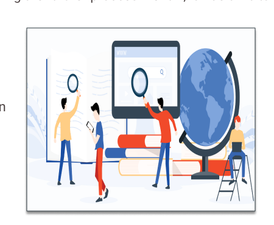
I conducted interviews with five students via Zoom meetings to gain insights into the challenges they encounter during the college selection or search process. Below are some sample questions that were posed during the interviews.
Simultaneously, i conducted a thorough competitive analysis to understand the existing landscape of college search tools and identify opportunities for differentiation.
This process was done to define the target audience with more clarity as well as illusrate their needs and actions. Empathy mapping helped me gain perspective on their thoughts and feelings. The data in the empathy map are based on insights from the user interviews.
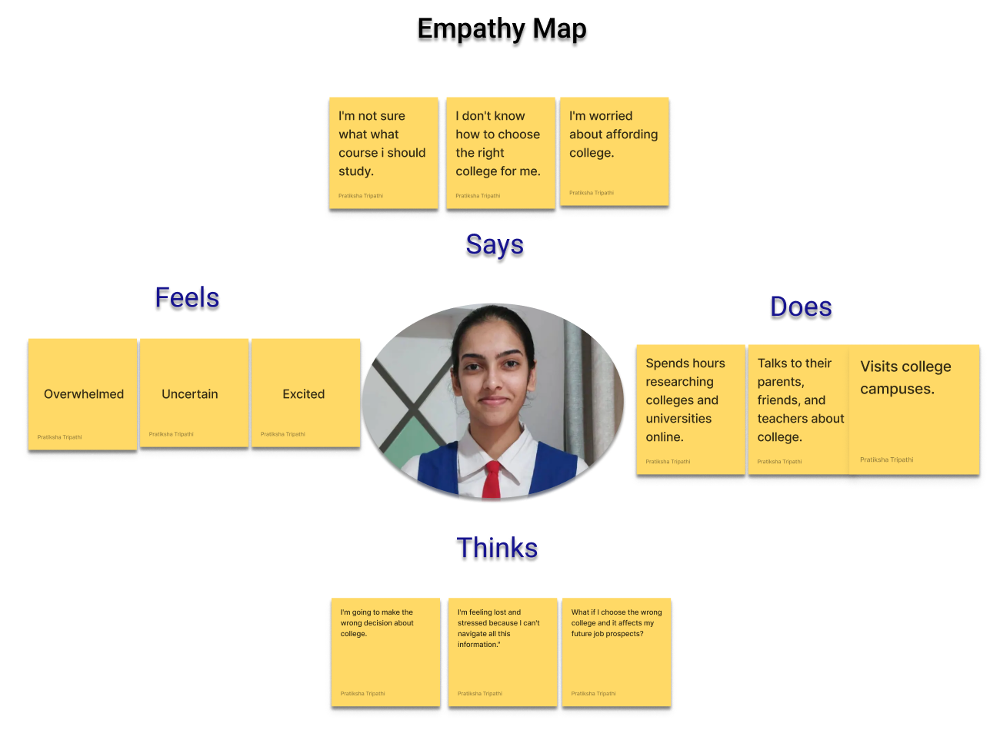
With the data collected from the interviews, I created a persona representing an ideal user of the application. The persona helped me arrive at better solutions as it gave an in-depth understanding of user goals, frustrations and overall personality.
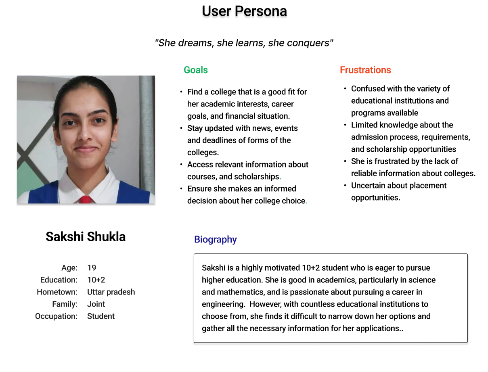
I created a Flow using FigJam to illustrate how the user will navigate through the application.
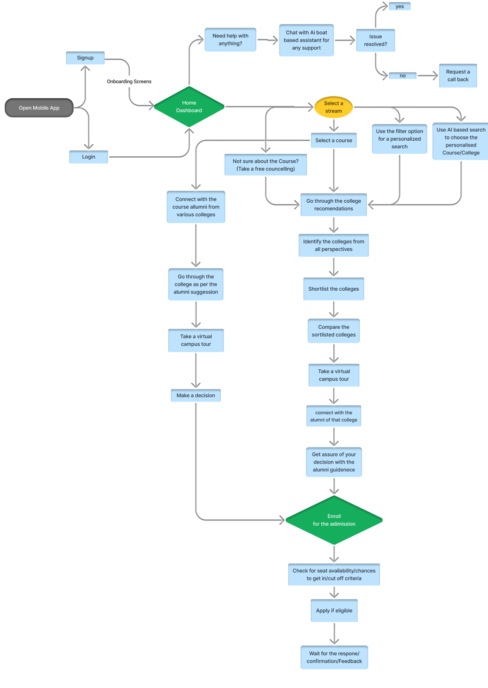
A well designer user friendly information architecture ensures that user spend less time and effort searching for information and are successful in finding what they need.
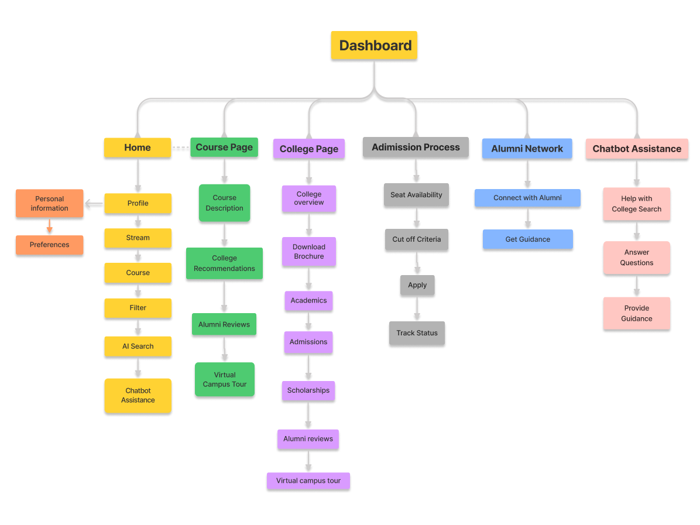
First i sketched the low fidelity wire frames on paper. After making correction in them, i moved on to designing the High fidelity wire frames using Figma.
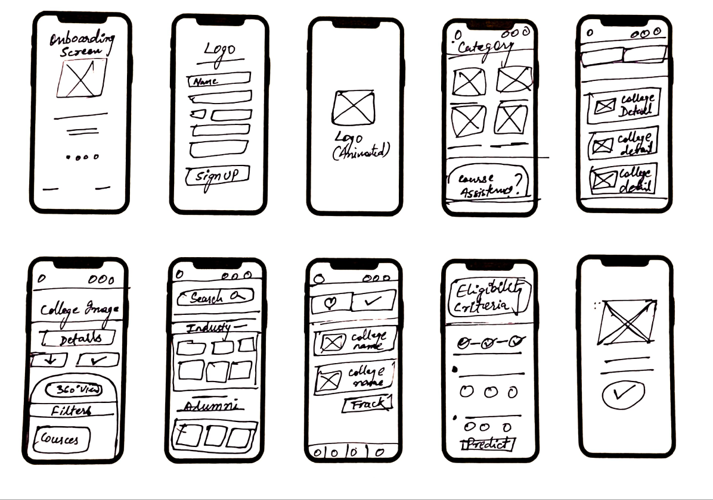
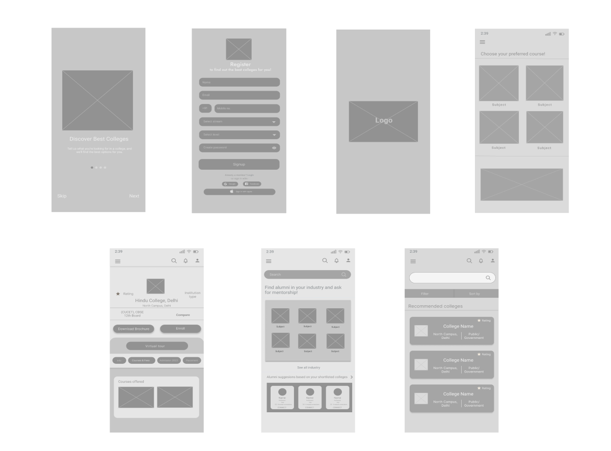
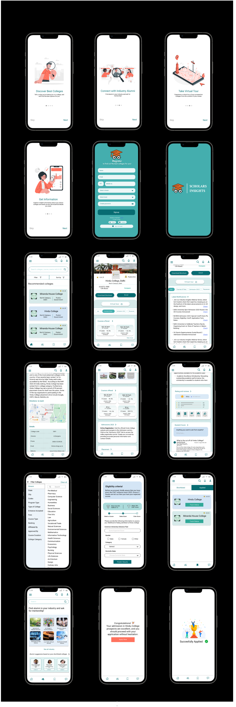
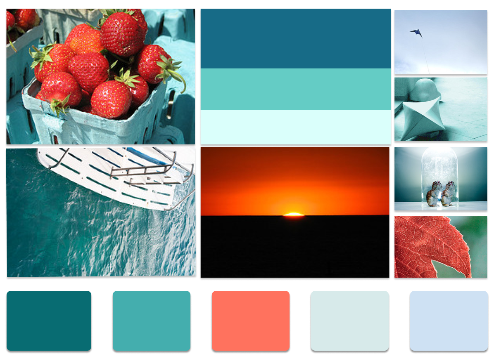
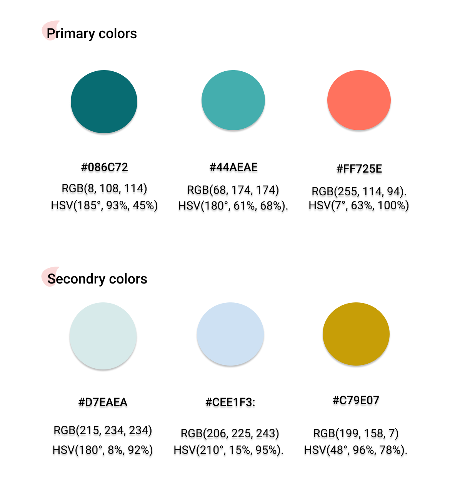
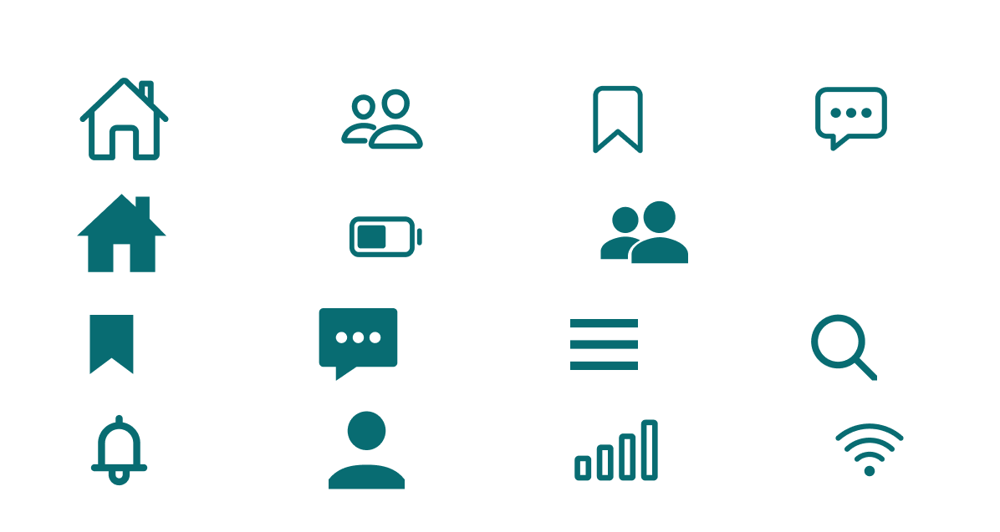
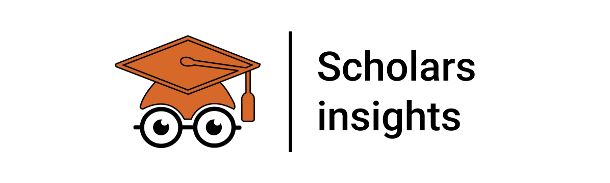
Users found the Scholar Insights App to be user-friendly for the college search process, with varying levels of confidence in their college selections. The app's design positively influenced some users. AI Personalized recommendations and the virtual campus tour were identified as valuable features when choosing a college.
Users were generally content with the color scheme and fonts, as they were easy to read. The app's design facilitated efficient navigation, and the inclusion of images was appreciated for enhancing the app's appeal.
Overall, the app's design met users' expectations for the scholars insight app. College profiles were seen as informative, though few users suggested including more detailed information.
My journey in developing the College Finder App has been a valuable learning experience. The project reinforced the importance of user-centered design and the significance of conducting thorough user research.
This project taught me the critical role of personalized recommendations, the power of virtual experiences, and the impact of engaging with alumni networks. It underscored the need for clear and user-friendly design, and how even subtle design elements, like color schemes and fonts, can influence user confidence.
I've also learned the importance of continually gathering user feedback and the iterative nature of design. User insights have been the driving force behind every enhancement in the app, ensuring it aligns with the genuine needs and expectations of its users.
Ultimately, this project has solidified my belief in the significance of user research, design thinking, and constant improvement in creating effective and user-centric digital solutions.
Thankyou for your time.